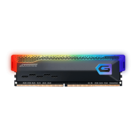

Memória RAM
A memória RAM (sigla para random-access memory, ou memória de acesso aleatório em tradução livre para o português), é a capacidade que um computador ou celular tem de dar suporte para rodar softwares, ou seja, de exibir programas e fazê-los funcionar.
Informações Principais
Um aspecto importante na hora de escolher a RAM ideal é a frequência compatível com o computador. Caso o sistema tenha suporte a uma velocidade menor que a oferecida pelos novos pentes de memória, o desempenho não vai ser correspondido.
Memória DDR4 Kingston Fury SuperFrame, 8GB, 3200Mhz, Black, KF432C16BB/8CL
De: R$289,00 por:
R$189,99 à vista
12x de R$20,32 sem juros
Memória DDR4 Geil SuperFrame, 8GB, 3200MHz, Gray, SFGAOG48GB3200C22BS
De: R$239,99 por:
R$174,90 à vista
12x de R$20,58 sem juros
- 
- Memória DDR4 SuperFrame RGB, 8GB, 3200MHz, Gray
De: R$299,00por:R$219,00 à vista
12x de R$21,47 sem juros